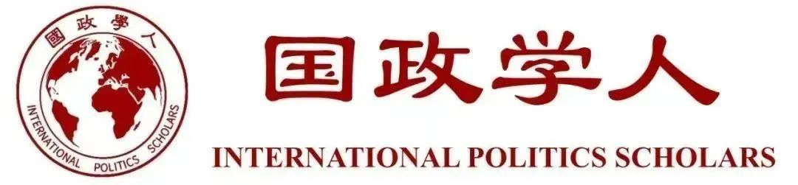

收录于合集

推荐语
该文区别于传统的以美国、中美关系为中心的分析视角，以美国盟友（日本、澳大利亚）的视角分析21世纪的日美澳安全保障合作的建立、发展和深化。了解美国盟友（而非美国）的战略意图、动机和目标有助于更加全面地理解中国崛起所面临的国际战略态势，并据此更准确地识别（潜在的）敌人和朋友。
作品简介
【作者】 佐竹知彦（SATAKE Tomohiko），日本国立防卫研究所政策推演室（国立防衛研究所、政策シミュレーション室）主任研究官,其研究主要涉及同盟研究、亚太国际安全、日美澳安全合作。
【编译】 徐一凡（国政学人编译员，立命馆大学国际关系学院）
【校对】 石雨宸
【审核】 李博轩
【排版】 王国伟
【来源】 Satake, T. (2019). The rise of China and strengthening of security cooperation between Japan, the United States, and Australia: With a focus on the 2000s. NIDS Journal of Defense and Security , 21(2), 49-65.

期刊简介
防卫研究所纪要（防衛研究所紀要，NIDS Journal of Defense and Security）由日本国立防卫研究所（国立防衛研究所，National Institute for Defense Studies）刊行，内容为防卫研究所研究人员的研究成果，涉及现当代安全保障问题的诸方面，有日英双语版本。日本国立防卫研究所是隶属于日本防卫省的半官方智库机构，负责防卫省的政策研究和自卫队高级干部的培养工作。
中国的崛起与日美澳安保合作的强化：
聚焦21世纪头十年
The Rise of China and Strengthening of Security Cooperation Between Japan, the United States, and Australia: With a Focus on the 2000s
佐竹知彦（SATAKE Tomohiko）
内容提要
本文将以同盟国（日、澳）的视角，分析21世纪头十年日美澳安全保障合作有所发展的理由。既存的研究认为，21世纪初开始形成的美国与其盟国关系的强化以对抗中国为目的。但是，日澳两国的对华认识与美国不同。地理上与中国相距甚远的澳大利亚特别如此。相较于直接的对抗，澳大利亚更倾向于通过外交与贸易强化对华关系。即便如此，日澳两国还是携手加强与美国的安保合作。这一合作乃是基于“补足”（supplementing）美国地区与全球角色的战略，加强美国及其盟友在维和行动及非传统安全领域的合作。21世纪头十年日美澳安保合作的强化，并非是直接以中国为目标，而是基于“轴辐”（hub and spokes）体系以维持与强化美国的存在为目的发展而成的。
文章导读
冷战后的亚太地区，一方面以美国为中心的双边同盟体制（即轴辐体系）仍然存在；另一方面，包括美国在内的同盟国间的合作也在加强。其中代表性的一例就是日美澳安全保障合作。日澳两国在冷战后一直加强双边防务对话，在21世纪初又将美国囊括进来，形成“三边战略对话（Trilateral Strategic Dialogue: TSD）”，三国安保合作得以快速强化。近年来，在维和行动和非传统安全领域之外，三国在反潜作战和两栖作战等传统安全领域的合作也有所扩大。
既存的研究认为，在美国同盟体系不断变化的背景下，随着中国的地区影响力快速上升，美国转变了其对华战略。Nina Silove认为，小布什政府加强了包括日澳在内的地区盟友的能力，帮助它们实现现代化，形成“联合网络（federated network）”，以防止中国在该地区的霸权崛起。她进一步指出，2000年以后美国及其盟友的安全保障合作强化完全是出于美国对中国的“外部制衡（external balancing）”，而非自然形成。
然而，Silove的研究并不能解释日澳等美国盟友为何能接受上述美国的战略构想。在21世纪初，日美澳的对华威胁认识及其对华关系差异较大。为何即便如此，日澳两国还是迅速加强了和美国的双边及三边安保合作呢？石原雄介认为，澳大利亚发展对日关系是基于“美国将在亚太地区长期拥有重大影响力，且日美同盟在其中又发挥重大作用”的认识。日澳双边关系的强化也是基于两国的对美关系。本文将在石原的基础上，以日澳对美关系为主轴，探究日美澳安保合作的发展进程。
第一节中，本文将展示从上世纪90年代后半段到21世纪初，日澳两国对中国的认识与美国有何不同。然而，为了维持美国在亚太地区的“接触”（engagement），他们依然自愿且积极地参与TSD。接下来，第二节将考察日美澳如何在非传统安全领域深化务实合作；同时指出，在这一过程背后的日澳共同战略是“补足”（supplementing）美国的地区与全球角色。第三节将讨论，尽管日美澳安保合作的强化与制度化是在中国崛起之背景下推进的，其主要目标却并非中国，而是基于“轴辐”体系维持并强化美国在这一区域的存在。
01
中国的崛起和TSD的形成
（1）背景
冷战后，特别是20世纪90年代后半段，日美澳安保合作仅在双边框架下进行，但已有澳大利亚的政客和专家指出构建三边安全合作的必要。事实上，在90年代中期的澳大利亚战略界，倡议三边合作的声音已经“有了一定的位置”。但是，日本却因担忧三边安保合作有可能在邻国中产生“不必要的疑虑”，而对此倡议相当慎重。此外，彼时的美国政策界也只是重视传统的双边同盟，对日美澳三边安保合作并不感兴趣。
改变这一现状的是于2001年上台的小布什政府。小布什政府的对外政策，特别是其亚洲政策强调以军事力量为中心的权力（power）因素。美国希望借此夯实自己主导的地区秩序，维持区域内的联盟关系。小布什政府视在亚洲权力大增的中国为“竞争者”（competitor）而非“战略伙伴”（strategic partner），希望与日澳等域内国家结为民主同盟以应对中国的挑战。这一民主同盟将构筑一种“更加相互关联的联盟体制“（more interrelated system of alliances），并抑制”敌对霸权国“（hostile hegemonic power）的行动。
对美国而言，日本是其亚太战略中最重要的伙伴。2000年后小布什政府希望扩大日本在安全领域的角色，使日本成为一个更加平等的盟友，借鉴英美同盟的模式赋予日美同盟新的活力。简言之，美国已预见到中国的崛起，希望在维持美国主导的地区秩序的同时，扩大包括日本在内盟友的实力。另一方面，20世纪90年代以来中国的国防开支迅速上升，日本也逐渐增强防范。双方在争议海域的牴牾日益激烈。日本防卫部门也在密切关注中国军事现代化、大国化的动向。此外，中国在核试验、台海危机和历史问题上所持的态度，也使得日本民众的对华情感相较冷战期间急速负面化。
虽然中国的崛起对美国及其盟友来说的确是长期的战略课题，但对日本来说却不是迫切的议题。尽管中国的国防支出迅速增加，但日本的国防支出几乎保持不变。由此看来，日本当时并不认为中国的威胁如此紧迫。而且两国自1994年开始进行防卫交流和安全对话，在经济、安全领域都维持了良好的关系。许多日本专家对20世纪90年代后半段美国为中心的“中国威胁论”持怀疑态度。无论如何，当时中国的国防开支还不到美国的十分之一，只要同美国保持紧密的同盟关系，日本足以应对中国的海上扩张。况且，彼时日本的主要军事威胁并非中国，而是正发展导弹和核武器能力的朝鲜。因此，当小布什政府提出以中国为目标重构日美同盟时，日本的决策者是相当困惑的。
澳大利亚的对华认识与美国和日本相较差异更大。彼时，澳大利亚并不认为中国的崛起会对本国安全构成潜在的威胁。比如，2000年发表的澳大利亚国防白皮书中并没有关于中国军事现代化的相关内容。尽管白皮书提及了非常规战争和非传统安全的威胁，但认为对澳大利亚本国构成直接安全威胁的可能性极小。该白皮书认为地区影响力急剧上升的中国对澳大利亚来说是重要的战略对话者（interlocutor），主张在战略问题上深化和发展与中国的关系。值得注意的是，重视对华贸易关系的澳大利亚保守派前总理约翰·霍华德（John Howard）致力于改善1996年台海危机以来恶化的对华关系，积极地开展对华外交，包括加强外交和安全对话，以及扩大与中国的贸易往来。霍华德认为澳大利亚并不是美国对华强硬路线的支持者，而是扮演促进中美”冷静和建设性对话“的角色。
当然，这并不说明澳大利亚的政策制定者对中国的崛起毫不关心。比如，上述白皮书就认为，亚太地区的安全环境可能会因为中美、中日关系的走向而恶化，且中国的崛起还可能会导致中美权力对比的变化。中国对澳大利亚虽然没有直接威胁，但也提出了“战略挑战”。澳大利亚的重点在于维持现行国际秩序，确保“没有任何一个国家或国家集团能够挑战美国塑造全球环境的总体能力”，而不是自己直接反对中国。日本作为美国在亚太地区最大的军事存在，地缘上正面中国，其对澳大利亚的战略意义也极其重要。冷战后澳大利亚对日本的基本政策鼓励日本在安全方面发挥作用，以制衡中国并加强美国的存在。
（2） 日美澳战略对话的建立
澳大利亚正式基于上述战略需求，提出了日美澳安保合作强化的构想。根据时任日本驻美大使加藤良三的说法，日澳安保合作的目的是要“补足”以日美同盟为基轴的美国地区存在，而三国合作更能促进这一目标。在中国崛起的背景下，澳大利亚的这一提案正好与美国的战略构想一致。2002年7月首次非正式的TSD副部长级会谈召开，此后到2005年，每年举行一次副部长级TSD，讨论包括朝鲜核问题、不扩散大规模杀伤性武器和反恐等诸多地区安全问题。尽管中国的崛起是TSD建立的主要因素，但其同时是日美澳讨论地区总体安全问题的非正式协商机构。
02
从“交流”到“合作”
（1）911恐怖袭击
2001年9·11恐袭后，日澳两国积极支持美国的“全球反恐战争“（Global War on Terrorism）。日澳两国的政策制定者都强烈认识到支援美国的地区和全球领导的重要性。比如，日本有必要在伊拉克战争中支持美国以显示日美同盟的稳固，从而遏制朝鲜的挑衅行动。如果美国因在伊拉克失败而威信扫地并因此陷入孤立主义，将对日本极其不利，因此日本必须积极协助美国的行动。同样，澳大利亚前总理霍华德在伊拉克问题上也多次强调协助美国的重要性。在此，美澳同盟的重要性不仅在于澳大利亚本国的国防，还在于通过同盟“保持美国在这一地区的存在”。尽管澳大利亚并没有类似朝鲜之于日本的直接威胁，但为了维持良好的安全环境，防止美国孤立主义和维持美国的地区存在仍然是必要的。因此，尽管面对国内巨大反对呼声，霍华德还是决意加入美国对伊作战。对日澳两国而言，美国参与地区事务和两国对美国的全球支援乃是表里一体，一体两面。
如此看来，日澳两国在维持美国的地区存在上有着共同目标，因此特别是在9·11之后，两国继续在反恐以外的其他领域深化合作是自然的发展过程。日澳在东帝汶维和行动（Peacekeeping Operation, PKO）中的合作就是一例。在1999年东帝汶分离运动爆发后，澳大利亚组织了东帝汶国际部队（INTERFET），主要发挥抑制冲突的作用。同时，澳大利亚也邀请日本派遣自卫队加入维和行动。起初日本因受限于“PKO五原则“而没有直接派遣部队。但是在东帝汶的冲突有所缓和后，日本于2002年3月向东帝汶派遣了690名自卫队员，是该国截至当时派遣过规模最大的维和部队。在东帝汶维和行动中，美国发挥了情报收集和后方支援等作用，但因欧洲事务抽不开身，并未向INTERFET提供地面部队。在此背景下，日澳在东帝汶的维和行动可以理解为对美国地区领导力的”补足“，即在稳固的同盟体制上维持美国的地区存在。
（2） 合作支持伊拉克重建
在伊拉克战后重建问题上的合作加强了日本自卫队和澳大利亚军方之间的联系。2005年2月，霍华德总理背弃竞选承诺，不顾国内反对决意再向伊拉克派遣450名士兵以“确保自卫队的安全”，以此将向来以经济为中心的日澳关系上升到战略层面。日本向外国派遣自卫队面临着敏感的宪法问题，澳大利亚清楚如果日本因安全问题而跟随荷兰的撤军行动，将可能会对多国联合部队造成“非常严重的打击”。而且，日本在伊拉克问题上的作为也是一块“试金石”，以检验双方在伊斯兰原教旨主义和大规模杀伤性武器的扩散等问题上是否有进一步合作的空间。日本在美国主导的“反恐战”和其他地区与全球安全事务上的作用都有所扩大，而这一变化也符合澳大利亚的战略目标。之后，日澳合作还在抗灾等其他领域有所进展。日本也投桃报李，为感谢澳大利亚对日本的帮助，在经贸领域对澳大利亚有所让利。由此，通过实地级合作（field- level cooperation），日美澳安保合作已经开始向地区甚至全球迈进。9·11恐袭加速了日美澳安保合作的进程，而日澳的相关合作又“补足”了美国的地区与全球领导力。如此，以同盟关系为基轴的美国地区存在得以维持和强化，日澳防务交流也更加务实和实地化，开始从“交流”向“合作”发展。
03
安全保障合作的制度化
（1） TSD部长级会议的建立和日澳安全合作联合声明
在2005年的日美澳三国外长会谈中，三国决定将TSD升格为部长级会议。2006年3月，首次TSD部长级会议在悉尼召开。在会后的共同声明中，三国决定加强在国际和地区安全问题上的信息共享和战略评估，以加强三国合作。除外交部门外，国防部门也加入进来。2007年，首次日美澳安全与防务合作论坛（Security and Defense Cooperation Forum, SDCF）在东京召开，商讨包括灾害支援、导弹防御、反海盗行动、演习中的经验教训和不扩散等议题。SDCF同时也发挥着情报互通和信息共享的功能。
随着三边合作的发展，日美澳三国合作中的“最弱一环”，即日澳安保合作也得到了强化。在上述各种机制的催化下，日本首相安倍晋三和澳大利亚总理霍华德于2007年3月发表了日澳安全合作联合声明。如果说这一宣言只是日澳安保合作的“骨架”，并未涉及任何实质性内容的话，那么之后两国的务实合作可以说构成了日澳安保合作的“血肉”。但是，出于诸多政治考量，两国并未最终缔结正式军事同盟条约。
（2）中国的崛起？
9·11恐袭后，日美澳在实践层面上的密切合作以及中国的崛起，成为21世纪头十年中段以来日美澳安全合作制度化的背后原因。9·11事件后关系一度改善的中美两国，因人民币汇率改革朝核问题和伊核问题等原因再次变得对立。2006年2月发布的美国《四年防务评估报告》（Quadrennial Defense Review, QDR）对中国的看法非常消极，认为“在主要和新兴大国中，中国同美国进行军事竞争的潜力最大”。此外，QDR还呼吁深化在亚太地区的双边多边伙伴关系，特别点名了日本、韩国、澳大利亚和印度，希望和这些国家加强在联合行动和情报方面的合作。
日本对中国军事活动的戒心也日益增强。航空自卫队为应对中国军机的紧急起飞（scramble）次数和中国海军对日本海域“侵犯”的次数均有所增加。2004年发布的《防卫计划大纲》提到了中国核导力量和海空军现代化的发展，以及海洋活动的扩大，认为“应对岛屿入侵”应成为日本国防能力建设的首要任务。此外，小泉首相参拜靖国神社的行为也使得中日官方和民间关系都降到冰点。
同样，澳大利亚也在逐渐提高对中国崛起的警惕。澳大利亚国防部2003年发表的报告称，尽管中美关系比以前更加稳定，但在两国的战略竞争和台湾问题上仍然存在误判的可能性。2005年的报告认为，中国国防现代化的速度和规模会导致可能的误判，希望中国能提高军事透明度且仅基于正当的安全需要发展军事能力。2007年的报告提到中国的反卫星武器实验，认为中国军队“破坏力”的提高不仅可能会导致误判，还可能会伤及地区的安全稳定。
话虽如此，这一阶段澳大利亚的对华威胁认知和日美相比还是有较大的差距的。特别是在霍华德政府的对华关系强化政策下，在经济方面，澳大利亚从1996到2006年对华出口平均每年增长18个百分点，累计增长了626%。2007年，中国超过日本成为澳大利亚的最大贸易伙伴。在安全保障方面，2004年10月，澳大利亚军方和中国人民解放军举行了第一次海上联合军演。日美的决策者对于澳大利亚的对华态度非常忧虑。有一种看法认为，美国把TSD升格为部长级的原因就是为了将澳大利亚“拉”回到日美一侧来。
尽管澳大利亚的对华态度与日美有所不同，但其对加强TSD框架下的合作仍然持积极态度，包括维持地区内的美国存在以及扩大日本的角色（以不激怒中国的方式）。事实上，据参与过SDCF的美国国防部官员詹姆斯·肖夫（James Schoff）所说，在会议中直接谈及中国大多只发生在战略环境构建的背景下。在TSD工作会议上讨论的内容主要包括人道主义援助与救灾，反恐，信息共享，不扩散，以及对太平洋和东南亚地区总体秩序的相关议题。这些议题都不是直接针对中国的军事威胁，而是讨论如何通过维持美国的地区存在和扩大日本的角色来稳定现行的地区秩序。这也解释了为什么日澳两国在21世纪头十年并无兴趣建立一个针对中国并把印度也包括进来的四国同盟。
04
结论
如上所述，日澳、日美澳安保合作在21世纪头十年中得以加强。这一趋势在很大程度上是日澳对美关系的延伸。围绕日澳合作的根本议题是如何维持和加强美国的地区存在，而中国的崛起和朝鲜的威胁只是次级议题。特别是澳大利亚，它尤其希望能在维持美国战略优势的前提下不损害与中国的关系，即使其对中国的崛起相当警戒。因此，澳大利亚不遗余力地加强与美国的双边同盟，扩大日本在安全领域的角色，并加强日美澳安保合作。尽管中国是促进日美澳安保合作的主要“因素”，但并非是该合作关系的直接“目标”。
如此看来，可以说在21世纪头十年日澳两国对战略态势的认识和美国大相径庭。美国的战略目标是通过强化和盟友（及盟友间）的关系来建立一个针对中国的“联合网络”（federated network）和 “外部制衡”。而对日澳来说，只要美国的地区战略优势依然存在，两国至少不会正式建立一个并非迫在眉睫还可能会惹恼中国的日美澳印四国同盟。特别是从重视对华关系的澳大利亚的视角来看，外部制衡中国的政策将会造成一种双重威胁——不仅会惹恼中国，而且还会卷入中日冲突之中。对日澳来说，最优的解决方案是基于“轴辐”体系维持和加强美国的地区存在，而非直接外部制衡中国。这一目标可以通过“补足”美国地区和全球角色的日澳合作来实现。从这个视角来看，我们可以观察到（处于与中国争夺地区霸权的冲突之中的）美国和其“小伙伴”日澳在对华姿态上的微妙差别。
译者评述
在中国的崛起过程中，一个重要问题就是如何处理国际社会对中国崛起的反弹。美国毫无疑问是中国崛起道路上最大的外部潜在障碍，也最有理由积极阻碍中国崛起以维持其地区与全球霸权。因此，学界似乎理所当然地把注意力集中在美国对中国崛起的应对之上。然而，美国对中国的牵制，至少在亚太/印太地区，并非单靠其一国之力，而是充分利用其地区盟友作为战略支点和抓手来试图“围堵”中国。在这一背景下，过分强调美国发挥的作用可能会忽视其盟友的战略能动性而只把后者看作美国权势的简单延伸。事实上，美国所主导的同盟体系并非铁板一块，其地区盟友往往有着与美国不同的战略判断和战略目标。弄清美国盟友的真正战略意图有助于中国发展潜在盟友，或至少中立化/非害化部分美国之战略支点/抓手，从而为中国的崛起赢得国际空间。
本文从日澳两国的视角出发分析了日美澳安保合作深化的进程，并指出日澳的首要战略目标是维持美国主导下的地区秩序，而非针对中国之崛起。如果当真如此，中国或许和日澳两国间并不存在如中美关系那般的“不解之结”。更进一步，中国或许能重新审视其与现行区域秩序间的关系，并设法化解与日澳间的战略矛盾。若能如此，那么美国对中国崛起的威胁或将大大减少。
本文由国政学人独家编译推荐文章观点不代表本平台观点

**** 添加 “ 国小政” 微信，获取最新资讯 ****

好好学习，天天“在看”
国政学人
支持学术公益与知识传播
微信扫一扫赞赏作者 __赞赏
已喜欢，对作者说句悄悄话
取消 __
发送给作者
发送
最多40字，当前共字
上一页 1/3 下一页
长按二维码向我转账
支持学术公益与知识传播
受苹果公司新规定影响，微信 iOS 版的赞赏功能被关闭，可通过二维码转账支持公众号。